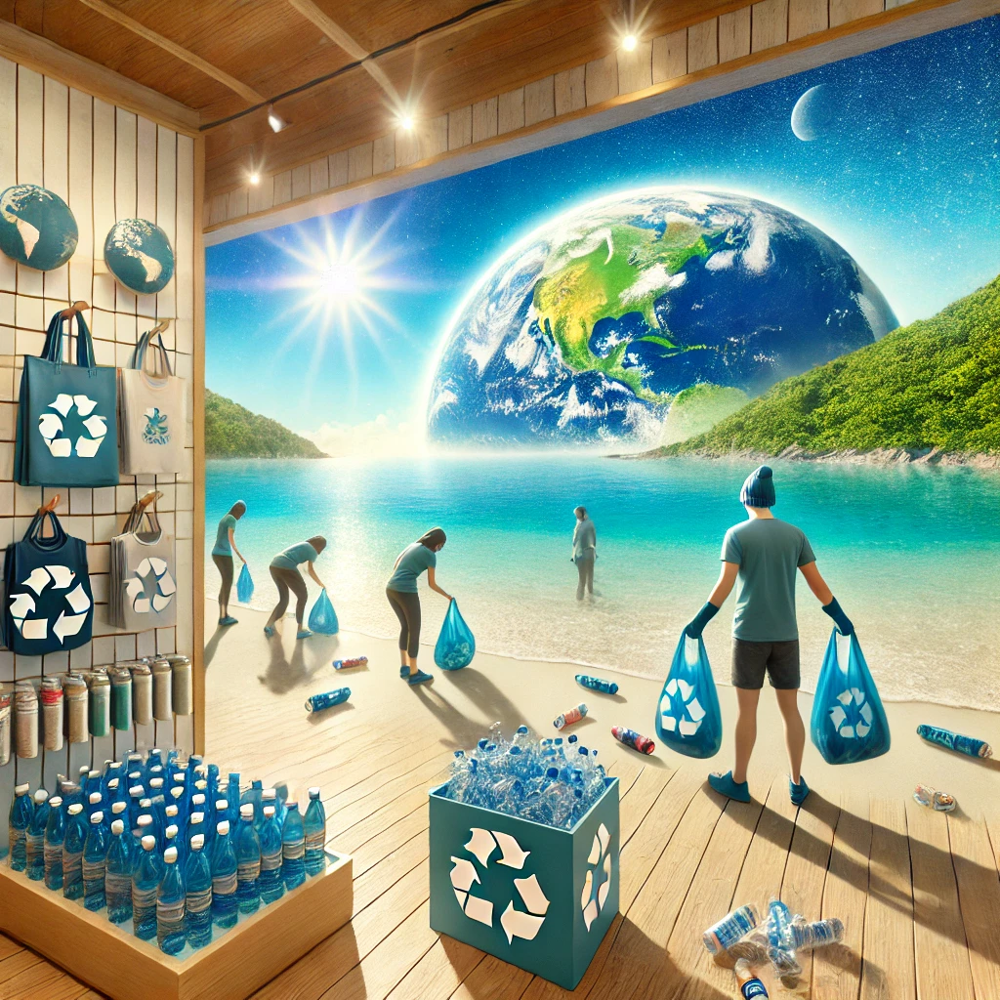

About
The venture team pursues this business idea to help reduce waste in the blue economy while providing valuable rewards to participants. Marine debris is a huge problem, especially in our oceans, and this idea encourages people to collect and recycle plastic bottles by offering eco-friendly merchandise in return.
